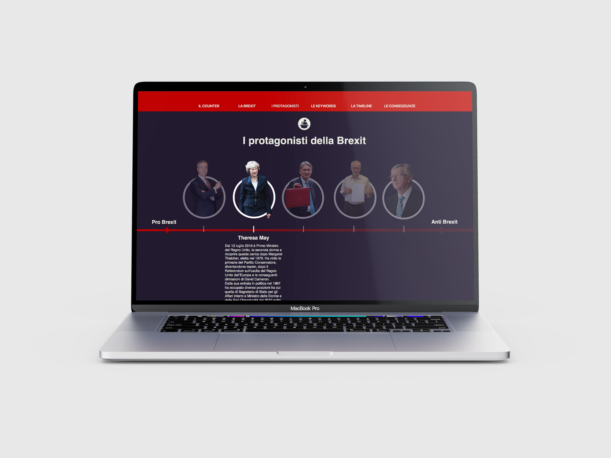
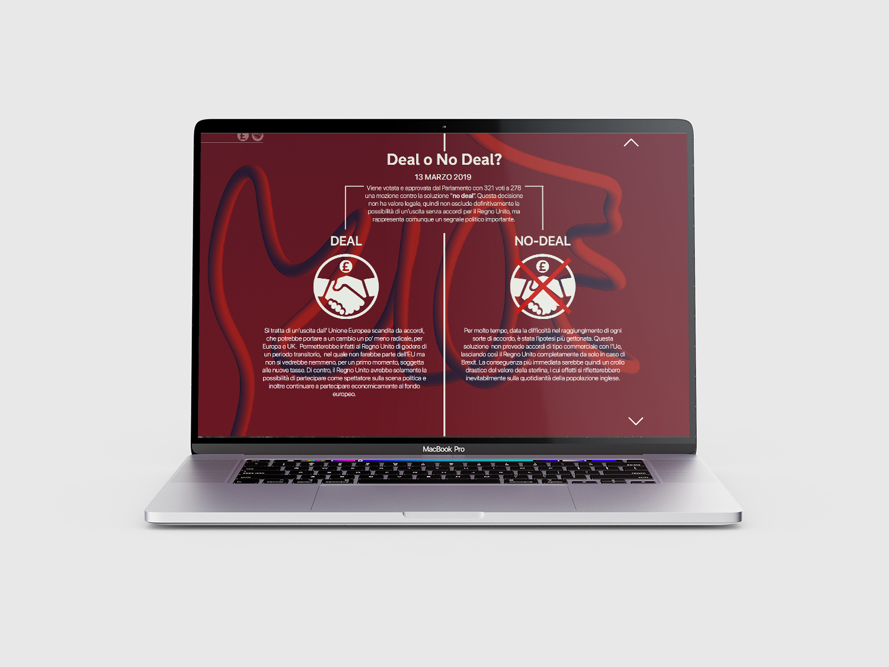
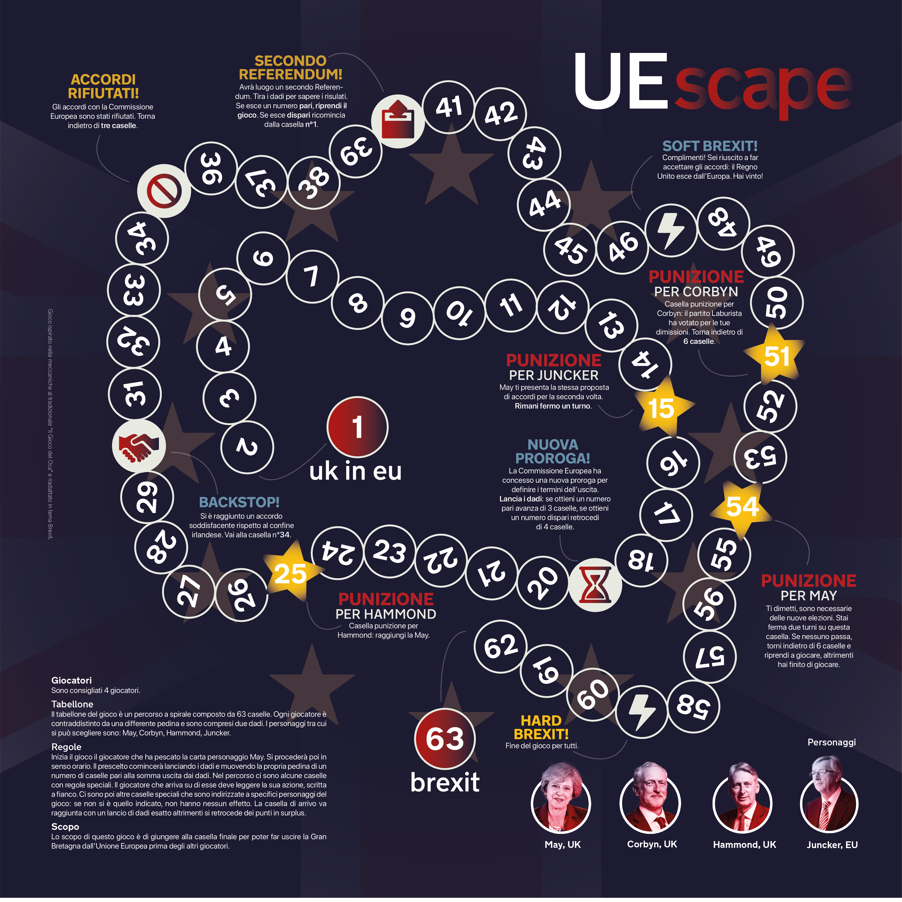
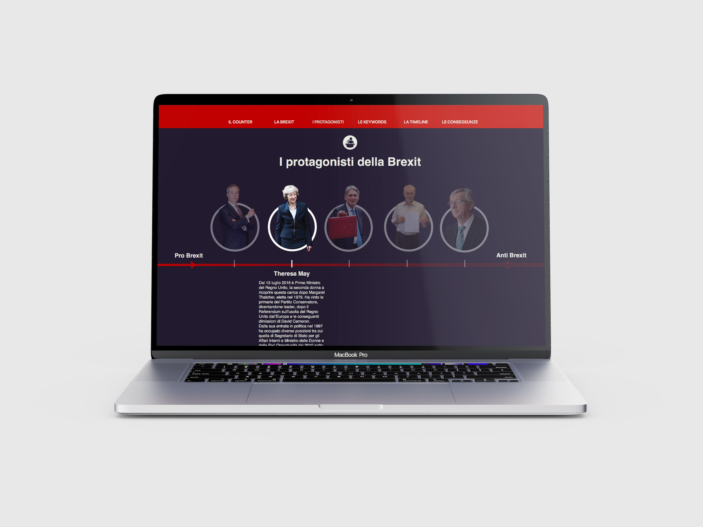
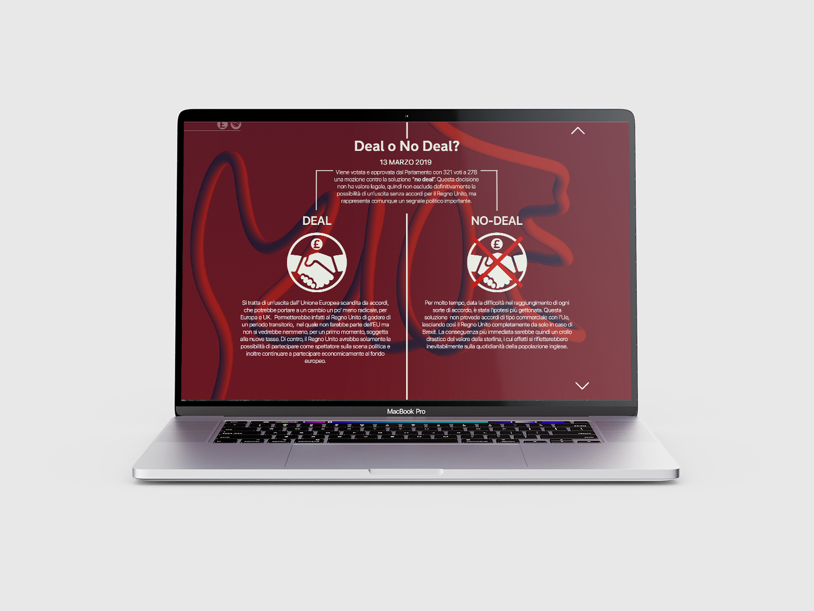
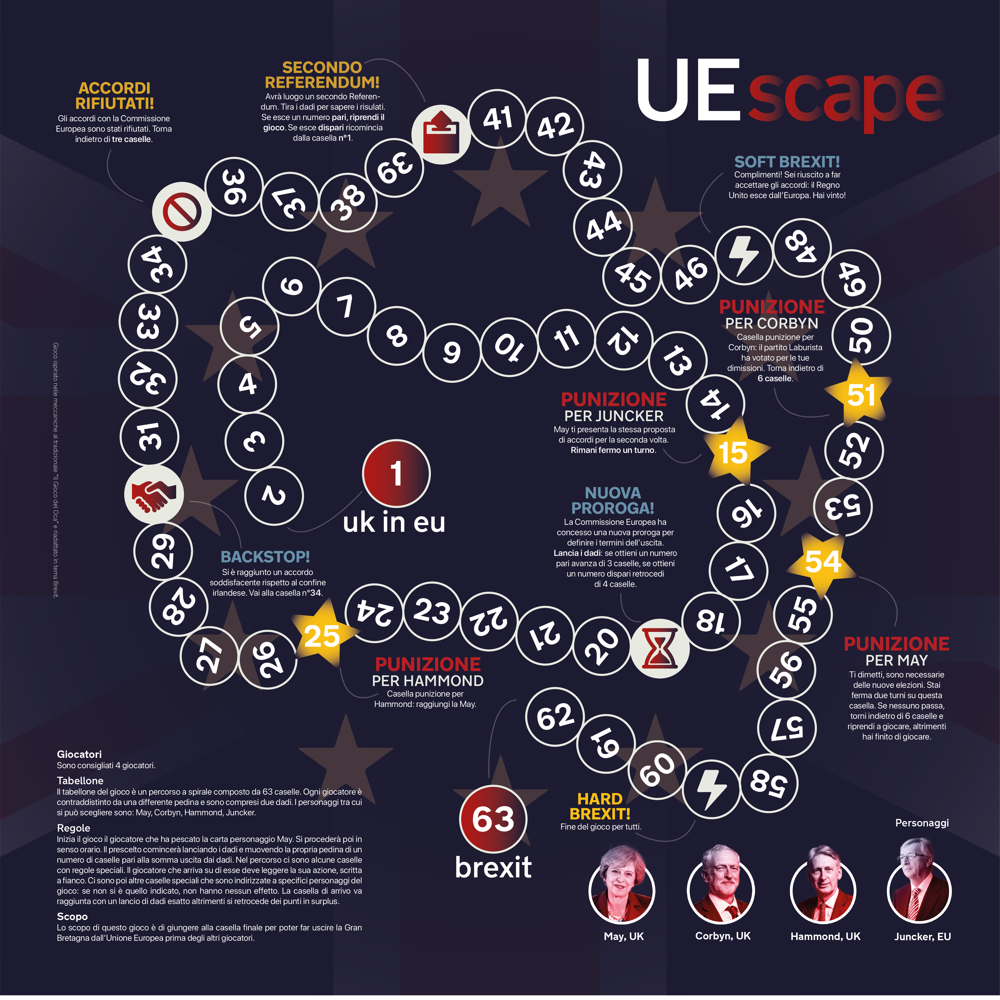

Booklet riassuntivo dell'analisi della notizia Brexit
 Pagine del sito internet creato come traduzione crossmediale

Gioco da tavolo EUscape ideato come traduzione transmediale
Booklet riassuntivo dell'analisi della notizia Brexit
 Pagine del sito internet creato come traduzione crossmediale

Gioco da tavolo EUscape ideato come traduzione transmediale
Brex¿t
Con il progetto si è studiata la narrazione, e quindi la percezione, della notizia Brexit attraverso la raccolta di dati quantitativi e qualitativi.
Partendo dai risultati dell’analisi, si sono sviluppate una traduzione crossmediale, ovvero un sito in cui raccogliere gli sviluppi della notizia, comunicandoli in modo chiaro e lineare, e una traduzione transmediale, per cui si è invece realizzato un gioco da tavolo basato sui protagonisti e gli eventi del fenomeno Brexit, il percorso è stato costruito sulla base dei continui cambiamenti di direzione.
Al progetto è stato riconosciuto il Premio Design per l’Informazione Giornalistica nella XI edizione del Premio Nostalgia del Futuro.
Corso di Sociologia dei Processi Culturali
e Comunicativi
Prof. M. Ciastellardi
A.A. 2018/2019
Progetto di:
Marta Sironi, Matilde Balestri, Sara Davì, Matteo Balestrini, Carlotta Bacchini, Pietro Forino